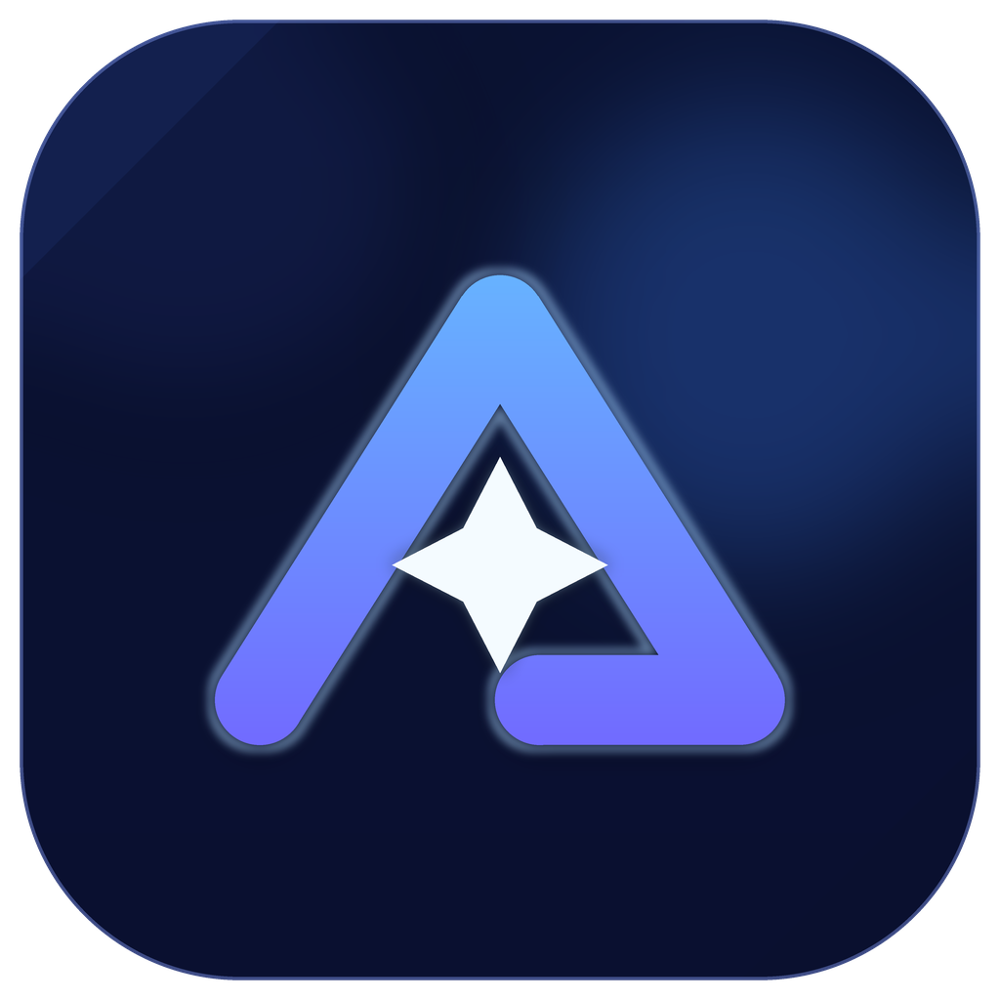
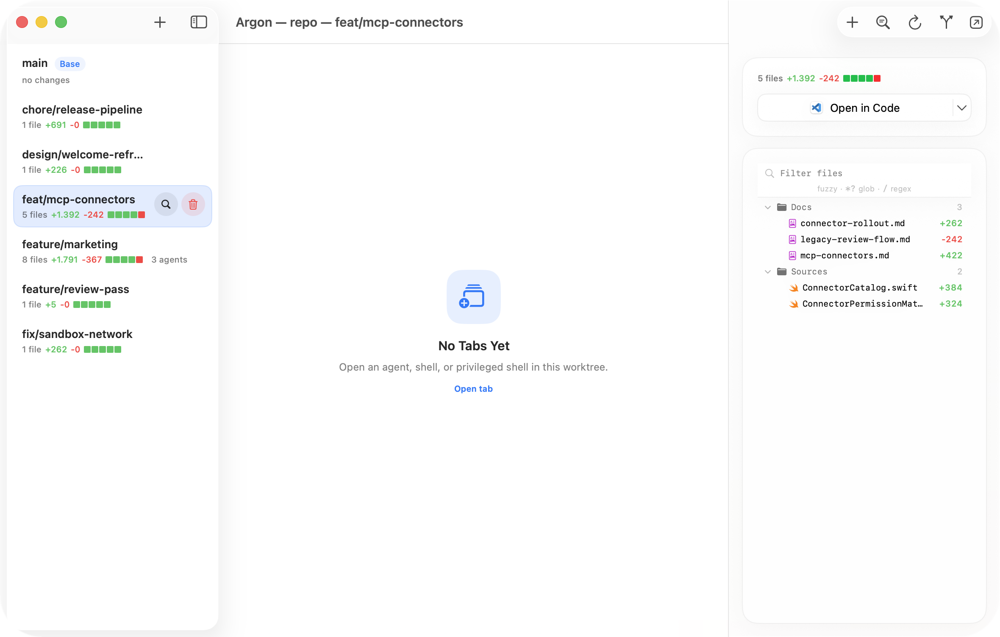
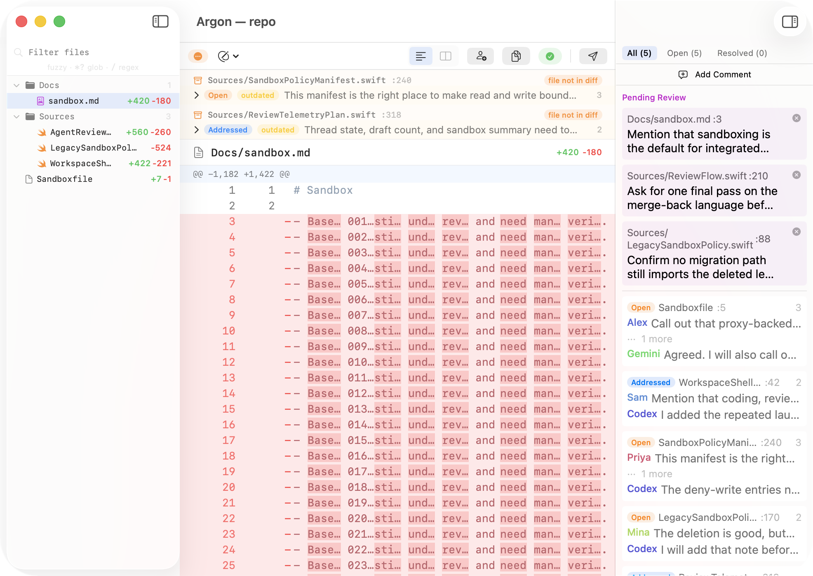
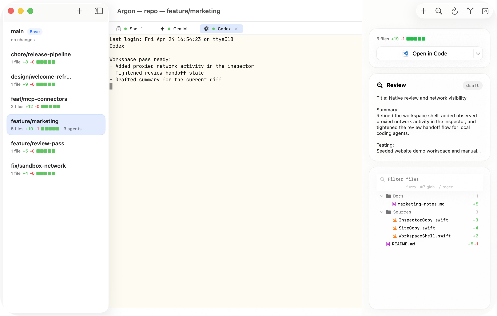

Context
Know where every agent attempt lives.
Branches, shell tabs, agent sessions, changed files, and review state stay attached to the repository they belong to.

ArgonWorkspace for coding agents
Keep agent work visible, reviewable, and contained.
Argon gives agent-assisted coding a home: isolated worktrees, terminals tied to branches, diffs ready for review, and sandboxed runs you can inspect. Move quickly while keeping context, safety, and final approval in one place.
Context
Branches, shell tabs, agent sessions, changed files, and review state stay attached to the repository they belong to.
Control
Read the diff, collect draft comments, request changes, approve, and merge back from the same workflow.
Safety
Project sandbox policy, filesystem access, and proxy-backed network activity are surfaced where the work is happening.
Agent loop
Argon keeps the whole local loop tight: open a repo, isolate the attempt, let the agent work with context, review the result, and choose what lands.
Jump from Terminal with argon <dir>, or open
a recent project and get back to the right repository quickly.
Start a branch from the sidebar so each agent run stays separate, comparable, and easy to clean up.
Agent terminals run inside the selected worktree while changed files, review status, sandbox state, and network activity stay visible.
Inspect the diff, collect draft comments, ask another agent for a pass, then approve, merge back, or open a PR.

Review
A finished terminal only means the agent stopped. Argon gives you the review layer that makes the result understandable, discussable, and safe to approve.

Capture issues while you read, then submit comments with a decision.
Bring in another agent for a pass without losing comment thread identity.
See who needs to act next, what still needs attention, and what is ready to land.
Sandbox
Integrated launches can use project-defined policy for file access, process execution, environment, and network access. You set the boundaries, and Argon keeps the activity visible beside the work they protect.
ENV DEFAULT NONE
FS DEFAULT NONE
EXEC DEFAULT ALLOW
NET DEFAULT NONE
NET ALLOW PROXY *
USE os
USE shell
USE git
USE agent
Beta
Install the Homebrew cask, open a repo, and give your coding agents a workspace built for context, review, and sandboxed runs.